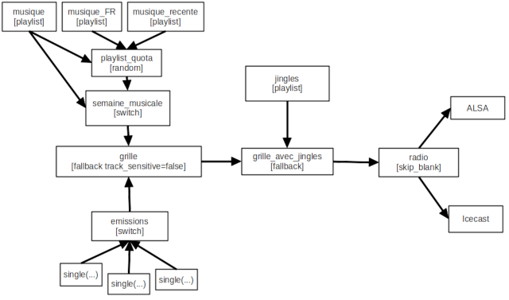

Posted on 2020-05-05 by Martin Kirchgessner
Dans toutes les radios il y a un automate, qui désigne le logiciel qui joue à longueur de journées (et nuits) la musique ou les programmes enregistrés. Pour une radio associative cet automate remplit souvent la majorité du temps d'antenne, donc on apprécie qu'il soit fiable. Et flexible, car chaque antenne a ses particularités. Et pas cher, car on est dans l'associatif. Il y a justement des logiciels libres qui remplissent cette fonction... mais c'est une jungle typique du libre ;)
Après quelques années passées à négocier avec Rivendell,
j'ai envie de voir ailleurs.
En ce moment beaucoup d'espoirs se portent sur LibreTime,
scission libre d'AirTime.
Libre, et nettement plus moderne que Rivendell...
mais avec des dépendances importantes (voire exagérées : RabbitMQ!!)
et une maintenance à bout de bras par quelques uns,
cf. l'aventure de la migration à Python3.
Au final Rivendell comme LibreTime me paraissent être des usines à gaz monolithiques,
dont la longue prise en main sera récompensée par un risque de casser au moindre apt update.
Les mailing-lists des deux projets vous confirmeront que c'est pas vraiment branche-et-joue.
En investiguant LibreTime je me suis aperçu que la génération du flux sonore y est en fait déléguée (via des scripts Python prometteurs) à Liquidsoap. J'avais déjà vu le nom, mais je n'avais pas encore remarqué que le premier exemple sur la page d'accueil de Liquidsoap c'est "Start a webradio". Tiens, tiens...
Faire une radio avec Liquidsoap peut paraître très 1995, mais les besoins concernant ces logiciels sont finalement très stables. Pour les radio A, il y en a notamment un qui n'est jamais évident : "boucher" l'antenne quand personne n'est en studio, avec un programme musical qui respecte Le Quota : 35% de chansons en Français et un jingle tous les quarts d'heure. Après quelques tests il ressort que ce n'est pas très compliqué avec Liquidsoap, et c'est exactement ce qu'on va faire dans cet article. Avec en bonus la pige d'antenne (l'enregistrement continu des programmes diffusés).
L'inconvénient de Liquidsoap est qu'il faut tout brancher soi-même, faire appel à d'autres logiciels pour la librairie musicale, ou pour le planning et sa publication. Et qu'il faut écrire des scripts, donc être à l'aise avec ces fichiers texte que la machine comprend (c'est sensible, à la virgule près) et comprendre un minimum l'API de Liquidsoap. Mais ça reste accessible - voyez ça comme des maths et puis, en comparaison, on peut rappeler que faire une grille de programmes avec Rivendell est carrément un art transmis par culture orale... Et on peut s'entraider en échangeant des morceaux de scripts à assembler. C'est ce qu'on va faire ici, ça risque d'être une série d'articles.
L'avantage de Liquidsoap est que ses possibilités sont énormes - c'est leur réalisation qui sera plus ou moins évidente - et c'est un logiciel léger/maintenu/fiable qui n'impose pas d'installer une distrib agée ou plusieurs serveurs de bases de données alors qu'en radio asso SQLite suffit largement, dans cet article on va même faire sans. "Possibilités énormes", c'est à dire du jonglages de flux, de fichiers, mixables entre eux ou pas, et en bonus il peut aussi inclure des images/vidéos dans le flux (coucou le DAB+), il y a même une sortie Youtube Live.
Dans la suite on suppose que vous avez installé Linux quelque part et que vous savez négocier avec une ligne de commande. Donc en plus du manuel d'installation de la distribution de votre choix, on ne saurait que trop recommander ... disons les 100 premières pages de Pour aller plus loin avec la ligne de commande de Vincent Lozano.
Vous voilà branché.e en tant que l'utilisateur qui par la suite exécutera Liquidsoap.
Utilisateur qui a accès aux musiques et autres sons qui passeront dans la radio.
Pour l'installation cet utilisateur doit aussi pouvoir appeler sudo.
Personellement j'ai testé tout cela sur une tour sans écran/clavier/souris,
qui tourne dans un coin tranquille et accessible par Internet,
et un peu sous Mac.
Visez liquidsoap >= 1.4 pour une meilleure gestion des accents.
Beaucoup de distributions fournissent un paquet liquidsoap dans le gestionnaire
habituel (apt, yum, etc) mais il a souvent du retard.
Donc on va plutôt passer par OCaml Package Manager.
C'est un peu plus long et lourd (ici ~/.opam consomme 1.2GB) mais plus à jour.
Dans la plupart des distribs cela consiste a installer le package opam
(sous Debian stable si opam fait des trucs étranges genre manger toute la RAM, re-essayez
après apt remove gringo).
Puis, en tant que l'utilisateur qui lancera Liquidsoap, lancer opam init, répondre avec entrain y aux deux questions,
et voilà enfin les deux commandes d'installation :
opam depext taglib mad lame vorbis opus cry samplerate alsa pulseaudio faad fdkaac flac inotify ladspa magic ogg shine soundtouch ssl xmlplaylist yojson liquidsoap
opam install taglib mad lame vorbis opus cry samplerate alsa pulseaudio faad fdkaac flac inotify ladspa magic ogg shine soundtouch ssl xmlplaylist yojson liquidsoap
Effectivement ça fait du monde sur la ligne ;
sous Mac vous remplacerez alsa pulseaudio par ao,
et dans certains cas vous ajouterez même à la liste :
bjack pour communiquer avec JACKffmpeg pour faire appel à l'encodeur/décodeur du même nomgstreamer pour faire appel à l'encodeur/décodeur du même nomlastfm pour pouvoir y enregistrer les lecturesOn suppose aussi que vous avez installé Icecast quelque part pour le flux Web ; la plupart des distributions fournissent une installation correcte. On verra aussi comment jouer notre radio sur la sortie audio de notre machine.
Je recommande aussi git qui servira à récupérer certains utilitaires mais pourra aussi vous servir à versionner vos scripts. Lui aussi fait partie des paquets habituels fournis par les distributions.
Si vous avez une interface graphique (Gnome, KDE, Mint, ...) vous avez déjà pulesaudio/ALSA, mais dans le cas contraire il faut les installer. Par exemple sous Debian :
sudo apt install alsa-utils pulseaudio
alsa-utils fournira le précieux alsamixer.
Attention : après installation, les niveaux/mute/routes sont souvent pourris,
surtout si vous avez une carte son sophistiquée,
donc lancez alsamixer dès maintenant pour vérifier.
ALSA suffit, mais si vous aimez l'aventure il faut aussi activer pulseaudio,
en tant que l'utilisateur qui va faire la radio (pas en tant que root) :
systemctl --user enable pulseaudio
systemctl --user start pulseaudio
systemctl --user status pulseaudio
La dernière commande doit afficher Active: active (running) en vert.
Liquidsoap est un moteur qui exécute un script, écrit dans un langage spécifique. Ce script peut faire beaucoup de choses : ça peut servir de re-encodeur de flux, de découpeur de fichiers, etc. On va surtout s'en servir pour faire un programme radio, donc voué à tourner en permanence. On peut tout à fait lancer plusieurs scripts en même temps sur la même machine, typiquement pour faire des webradios thématiques.
Liquidsoap représente notre programme radio comme un flux continu entre des
sources et des sorties. Et c'est tout. C'est une différence majeure avec
d'autres automates radio : Liquidsoap n'a pas forcément d'attache à l'heure
réelle, il vérifie surtout que le flux ne risque pas d'être interrompu.
Ainsi, par défaut les sources basiques comme single ou playlist
jouent en boucle.
Plus important : il faut que les sources soient "safe" c'est à dire
qu'elles donnent du son à coup sûr.
Parmi les sources de base, seules single et in (la carte son) sont sûres -
eh oui une playlist n'est pas sûre parce qu'elle peut contenir tout et n'importe
quoi, y compris l'URL d'un fichier distant
(que Liquidsoap téléchargera d'avance comme une fleur).
Au lancement, Liquidsoap vérifiera que le flux défini par le script a au moins une retombée sûre,
sans quoi il ne voudra pas fonctionner !
Ceci dit on peut mettre mksafe autour d'une source non sûre.
Cet opérateur
remplacera les éventuelles coupures par un silence, ce qui ne risque pas
d'arriver avec une playlist de fichiers locaux qui sont aussi chargés individuellement en avance.
On reverra cette question au fur et à mesure que notre script va se complexifier.
Concrètement, un script Liquidsoap est un fichier texte.
La convention est d'utiliser l'extension .liq ;
il existe sûrement un module de coloration syntaxique pour votre éditeur préféré
(en tout cas il y en a un dans une extension VSCode).
Dans ce fichier, en plus des instructions Liquidsoap on peut mettre des
commentaires pour expliquer ce qui se passe, en commençant le commentaire par
un dièse (Liquidsoap ignorera alors la fin de la ligne).
On va commencer très simple, jusqu'à faire une boucle musicale typique des radios catégorie A ; c'est à dire quatre indicatifs (un jingle) par heure et le fameux "35% de titres francophones, dont 25% au moins du total provenant de nouveaux talents".
La source la plus simple est single, qui lit un fichier en boucle :
radio = single("/home/radio/Musique/Michel/Le vrai Michel/01 Michel en illimité.m4a")
C'est un script valide ... mais qui ne fera rien, car rien n'est branché pour
consommer cette source. Ajoutons donc une sortie vers la carte son
et une sortie Icecast encodée en ogg. Toutes deux reprennent source:
output.alsa(radio)
output.icecast(%vorbis,
host = "localhost",
port = 8000,
password = "secret",
mount = "radiomichel.ogg", # donc ce sera sur http://localhost:8000/radiomichel.ogg
radio)
Avec ces 3 instructions dans un fichier radio.liq,
exécutez liquidsoap radio.liq et c'est parti pour Michel en illimité.
La même source est donc envoyée vers deux sorties.
On pourrait en ajouter tant qu'on veut, c'est pratique.
Mais ces sorties fonctionnent très différemment :
elles n'ont pas du tout la même gestion du temps et des tampons.
Or, avec ce qu'on vient d'écrire, Liquidsoap va les garder synchronisées de très près,
ce qui risque de créer des glitches dans la carte son.
Pour éviter cela on va explicitement séparer les clocks et insérer un buffer :
output.alsa(radio)
clock.assign_new(, [
output.icecast(%vorbis,
host = "localhost",
port = 8000,
password = "secret",
mount = "radiomichel.ogg", # donc ce sera sur http://localhost:8000/radiomichel.ogg
mksafe(buffer(radio))
)
])
Nous n'utiliserons que ces deux sorties pour la suite :
c'est source qui va beaucoup changer.
Pour plus de détails, ou si vous avez un jour des messages d'erreurs qui parlent
de clock, Underrun ou buffer, voyez la partie
Clocks de la doc.
Dans la suite, et surtout en écrivant des scripts plus complexes, prenez l'habitude de tester les modifications au fur et à mesure. Pour cela il est plus pratique d'installer Liquidsoap sur un autre ordinateur que l'antenne, pour pouvoir lancer :
liquidsoap --check monscript.liq
Qui ne va pas l'éxecuter mais juste tenter de le charger, et se planter avec un message plus ou moins clair s'il y a une erreur dans le script (problème de syntaxe, source pas sûre, ...).
L'émission FM impose l'insertion régulière d'indicatifs du service,
c'est à dire quelque chose qui dit le nom de la radio et sa fréquence
quatre fois par heure. Bref, des jingles.
Si /home/radio/jingles est le répertoire dans lequel j'entasse mes jingles,
une source de jingles peut s'écrire :
jingles = playlist("/home/radio/jingles")
Remplaçons playlist par playlist.safe,
pour précharger les fichiers du répertoire dès le lancement du script -
par défaut playlist n'est pas une source sûre,
donc l'autre intérêt de playlist.safe est qu'on peut l'envoyer directement
dans une sortie (qui n'accepte que les sources sûres).
Ensuite, par défaut playlist charge en mode randomize, c'est à dire qu'il
charge la liste, la secoue aléatoirement, et ensuite la lira en boucle
jusqu'à la fin des temps. On préfèrerait qu'il relance les dés
à chaque lecture : c'est le mode random.
Enfin on peut lui demander de recharger la liste dès que quelque chose bouge dans le répertoire, c'est plus pratique pour mettre en rotation (ou retirer) un jingle.
Ces trois modifications s'écrivent :
playlist.safe("/home/radio/jingles", mode="random", reload_mode="watch")
Cette source lit des jingles sans arrêt - enfin, dès qu'on la donne à une sortie.
Or on en a besoin que environ tous les quart d'heures.
On va donc intercaler l'opérateur delay,
qui lit une piste de la source puis attend un certain temps avant de s'annoncer
comme source disponible :
jingles = delay(780.,
playlist.safe("/home/radio/jingles", mode="random", reload_mode="watch")
)
Nous pouvons maintenant mettre nos jingles dans le flux de la radio,
via l'opérateur fallback.
C'est un opérateur qui accepte autant de sources que l'on veut :
il va toujours piocher la première source disponible.
Et justement, à cause du delay les jingles ne seront plus disponibles
pendant quelques minutes après la lecture d'un jingle.
Nos sources complètent ressemblent donc à:
musique = single("/home/radio/Musique/Michel/Le vrai Michel/01 Michel en illimité.m4a")
jingles = delay(780.,
playlist.safe("/home/radio/jingles", mode="random", reload_mode="watch")
)
radio = fallback([jingles, musique])
# ajoutez les sorties
On parlait d'un jingle tous les quarts d'heure,
mais on règle le délai sur 780 secondes (13 minutes)
car par défaut fallback attend la fin d'une piste pour re-évaluer qui est disponible.
Donc nos jingles ne couperont pas la musique, mais risquent d'être joués
avec un peu plus de délai que la valeur donnée.
Si vous aimez la théorie, on signale que les opérateurs comme delay ou fallback
crééent aussi une source à chaque utilisation.
On aime bien Michel en illimité mais il est temps de changer de disque.
Disons que toute notre musique est dans un dossier /home/radio/Musique.
On peut construire une source qui va piocher aléatoirement dans ce dossier en écrivant :
playlist("/home/radio/Musique")
Comme on le disait plus haut : Liquidsoap ne veut que des sources sûres.
playlist n'est pas sûr car il peut aussi lire une playlist depuis un fichier,
qui pourrait renvoyer vers un fichier à télécharger,
qui pourrait ne pas être là (et Liquidsoap ne rigole pas avec les sources d'erreur).
Une source non sûre ne peut pas être envoyée directement vers une sortie,
donc si on ajoute notre playlist dans la liste de fallback Liquidsoap nous enverra ballader dès le lancement.
On va donc tricher en utilisant mksafe,
qui remplace les éventuels indisponibilités de la source par un silence.
Par ailleurs, les fichiers du répertoire ne sont scannés qu'à la création de la source.
Mais au fil du temps on aimerait bien ajouter/retirer des fichiers
pour les mettre en rotation.
Pour cela, on va ajouter le paramètre reload=3600,
qui va forcer un parcours du répertoire toutes les heures.
Le répertoire, et ses sous-répertoires - mais rassurez-vous ça va vite,
j'ai testé avec une disque USB contenant 7516 fichiers : le chargement est instantané
(ce serait plus long avec playlist.safe).
Une remarque avant d'ajouter cette nouvelle source au fallback :
ici on ne pioche que des fichiers locaux,
donc mksafe ne risque pas de génerer des silences...
Par contre quelqu'un pourrait, par inadvertance, avoir laissé une piste de fin
d'album avec le bonus planqué au bout de 3 minutes de silence.
Pour éviter de le déguster à l'antenne, on peut aussi ajouter un détecteur de
silences qui zappe la piste en cours, dans ce cas.
Cet opérateur c'est skip_blank, qui avec les paramètres suivants zappera la piste en cours
si on reste sous -50dB pendant au moins 10 secondes :
skip_blank(source, max_blank=10., threshold=-50.)
Si vous non plus vous n'aimez pas les blancs d'antenne je recommande de
carrément mettre skip_blank en dernier opérateur avant les sorties.
Le début de notre script ressemblera donc à :
musique = playlist(reload=3600, "/home/radio/Musique")
jingles = delay(780.,
playlist.safe("/home/radio/jingles", mode="random", reload_mode="watch")
)
musique_et_jingles = fallback([jingles, musique])
radio = skip_blank(musique_et_jingles, max_blank=10., threshold=-50.)
A ce stade vous avez une webradio musicale !
Si nos contraintes d'antenne (ou convention CSA...) imposent de diffuser au moins 35% de chansons en français et 25% de sorties récentes, on peut sélectionner les fichiers présents dans le dossier musical pour assurrer ces proportions... on peut aussi s'aider de Liquidsoap.
Si l'on répartit les chansons françaises, les sorties récentes et le reste dans trois répertoires différents, on peut en faire une source pour chacun :
musique = playlist(reload=3600, "/home/radio/Musique/TOUT")
musique_FR = playlist(reload=3600, "/home/radio/Musique/FR")
musique_recente = playlist(reload=3600, "/home/radio/Musique/AIRPLAY/")
Puis utiliser l'opérateur random pour créer une nouvelle source qui combine aléatoirement les trois.
Par défaut random pioche a égalité dans les différentes sources qu'on lui donne,
mais on peut lui passer une liste de valeurs, weights, pour piper les dés :
playlist_quota = random([musique, musique_FR, musique_recente], weights=[40,35,25])
Attention, il doit y avoir autant d'entrées dans la liste weights que dans la liste de sources,
sinon Liquidsoap complète avec des 1.
Ci-dessus on a mis des valeurs dont le total est 100,
pour correspondre intuitivement aux pourcentages attendus,
mais on aurait aussi pu mettre [4,3,2].
... et même de 8h à 22h30 le week-end.
Si le reste du temps on veut piocher uniquement dans musique
(on pourrait aussi ajouter une playlist Nuit),
on peut utiliser l'opérateur switch pour choisir une source en fonction de l'horaire.
Avec les sources créées dans auparavant :
semaine_musicale = switch([
({ (1w or 2w or 3w or 4w or 5w) and 6h30-22h30 }, playlist_quota),
({ (6w or 7w) and 8h-22h30 }, playlist_quota),
({ true }, mksafe(musique))
])
switch est paramètrée par une liste de couples (condition, source) et dans Liquidsoap les conditions d'horaires peuvent s'écrire avec la notation que vous voyez ci-dessus entre accolades.
6w et 7w correspondent au Samedi et au Dimanche.
La condition de jour n'est pas obligatoire, on aurait pu mettre une seule ligne avec {6h30-22h30} pour appliquer la même règle toute la semaine.
On rajoute un mksafe à la fin car switch n'est sûre que si elle contient une source sûre avec une condition toujours vraie.
Programmons maintenant une émission pré-enregistrée. Il faut d'abord une source correspondant à l'émission.
Le plus simple est de charger uniquement l'épisode à diffuser :
on utilise alors une source single qui pointe un fichier,
que vous pouvez remplacer par un nouvel épisode au fur et à mesure.
Ce qui donne :
single("/home/radio/emissions/superemission/EpisodeCourant.flac")
Attention les meta-données (dont le titre) ne sont pas re-chargées si le fichier change pendant que Liquidsoap tourne.
Si vous pre-chargez plusieurs épisodes, vous pouvez utiliser playlist et
pointer vers une répertoire, par exemple en faisant
mksafe(playlist("/home/radio/emissions/superemission", mode="normal", reload_mode="watch"))
Grâce à mode="normal" la liste sera prise dans l'ordre des noms de fichiers,
et grâce à reload_mode="watch" la playlist sera re-initialisée dès qu'un
fichier bouge dans le répertoire.
Attention, avec cette méthode tous les fichiers du répertoire seront lus,
et l'ordre n'est garanti que tant que vous ne redémarrez pas Liquisoap,
donc ne chargez pas un an d'avance : s'il y a une coupure d'electricité,
il repartira du premier.
Choisissez une des deux méthodes.
Disons que la source de votre émission s'appelle superemission,
on a plus qu'a l'intégrer au switch musical
avec une condition pour la passer le Samedi à 12h ?
superemission = single("/home/radio/emissions/superemission/EpisodeCourant.flac")
semaine_musicale = switch([
( {6w and 12h}, superemission),
...
])
Eh non ! Les conditions d'horaires d'un switch ne sont re-evaluées
qu'à la fin de chaque piste. Ce qui veut dire que :
12h tout court est une condition valable jusqu'à 12h59:59).Pour pallier à cela, on va plutôt créer ajouter un fallback et un switch
dédiés aux programmes qui doivent partir à l'heure :
emissions = switch([
({ 6w12h00m }, superemission),
])
Contrairement au switch de la section précédente,
on ne termine pas sur une ligne { true } (qui est le programme par défaut, à toute heure).
emissions est donc une source non-sûre,
car elle ne sera disponible que pendant qu'elle joue la source d'une condition d'horaire validée.
Autrement dit, emissions ne sera une source disponible que le Samedi à 12h00:00
et jusqu'à la fin de la première lecture de superemission, si le fichier est là.
On va aussi ajouter un fallback pour faire l'aiguillage en fonction de la
disponibilité des émissions.
A la différence de celui des jingles, dans ce cas on désactive track_sensitive,
c'est à dire que dès qu'une source plus prioritaire devient active, on l'enclenche
(par défaut, fallback attend la fin de piste en cours pour re-évaluer les disponibilités).
base = fallback([emissions, fond_musical], track_sensitive=false)
Comme c'est un changement de programme potentiellement brutal, on va ajouter un opérateur de crossfade :
def crossfade_3s(a,b)
add(normalize=false,
[ fade.in(duration=3.,b),
fade.out(duration=3.,a) ])
end
Cela s'intègre en ajoutant à fallback un paramètre transitions,
qui liste la fonction de transition à utiliser à la fin de chaque source ;
donc la liste transitions doit faire la même longueur que la liste de sources.
Ce qui donne :
base = fallback([emissions, fond_musical], track_sensitive=false,
transitions=[crossfade_3s, crossfade_3s])
Une autre conséquence de track_sensitive=false est que fond_musical
reprendra exactement où il en était quand emissions s'est activée,
c'est à dire en pleine chanson (si ça ne vous plaît pas,
utilisez plutôt fallback.skip mais il ne propose pas de transitions).
Si le single de l'émission n'est pas disponible, fond_musical continuera de jouer sans interruption.
Si vous avez un doute sur l'imbrication des opérateurs,
nous allons reprendre le script complet dans la section suivante.
Côté émissions, à partir de là on peut donc ajouter autant de programmes qu'on veut,
en ajoutant les sources et les horaires correspondants dans emissions.
L'écriture des horaires permet différentes variantes et abbréviations ;
pour plus de détails voir la partie "Time intervals" de
cette page.
Attention au piège :
{ 12h } est valable pendant une heure,
alors que { 12h00 } est valable pendant une minute.
Cela fait une grosse différence si le programme ne dure qu'un quart d'heure :
avec { 12h } il serait diffusé en boucle jusqu'a 12h59...
Le script final de cette radio est téléchargeable ici, mais un schéma du flux entre sources et sorties sera plus clair pour résumer ce qui se passe une fois qu'on a utilisé tout ce qu'on vient de décrire :

Ce schéma représente notre radio tel quel la voit Liquidsoap : c'est un flux !
Chaque bloc sur le schéma correspond à une variable dans le script,
il est important qu'ils aient chacun un nom différent.
Dans le script j'ai aussi ajouté id='nom' à la plupart des
opérateurs, pour qu'ils apparaissent dans le log avec ce nom :
c'est plus clair pour lire le log.
En construisant un programme ou une grille il vaut mieux commencer par faire ce schéma avant d'écrire le script - le top étant de numériser le schéma et de le conserver/synchroniser a coté du script !
liquidsoap-daemon est un utilitaire qui créé un service système à partir d'un
script, ce qui permet notamment de l'éxecuter automatiquement au démarrage.
On commence par l'intaller :
cd
git clone https://github.com/savonet/liquidsoap-daemon.git
cd liquidsoap-daemon
mkdir script
à partir de là, placez le ou les scripts concernés dans le répertoire
liquidsoap-daemon/script.
Par exemple si le script s'appelle radio.liq, exécutez
(en tant qu'utilisateur qui peut faire sudo)
depuis le répertoire liquidsoap-daemon :
./daemonize-liquidsoap.sh radio
sudo systemctl start pige-liquidsoap
Et c'est parti ! Il démarrera tout seul au prochain boot.
Le fichier journal (où Liquidsoap raconte ce qu'il fait) sera
liquidsoap-daemon/log/radio-run.log
Attention pour appliquer une mise à jour du script, il faut modifier le
fichier puis refaire les deux commandes, mais en précisant restart à la deuxième.
Le restart va complètement relancer le flux,
donc interrompre la piste en cours puis laisser un blanc de 1 ou 2 secondes
le temps que ça reparte.
On peut brancher le signal qui part à l'antenne sur l'entrée audio de notre machine, et y lancer un script qui ne sert qu'à la pige. Ce script ne contiendra que les deux blocs ci-dessous :
output.file(%flac,
"/mnt/pige/%Y-%m-%d/%Hh%M_%S.flac",
in(),
reopen_when = {0m}
)
Suivant cette première instruction,
Liquidsoap écrira un fichier FLAC par heure (reopen_when = {0m}),
dans un répertoire par jour, dans /mnt/pige
... en espérant que in() pioche la bonne entrée !
On ajoute ensuite un ménage automatique des fichiers et répertoires agés de plus d'un mois :
exec_at(freq=3600., pred={ true },
fun () -> list.iter(fun(msg) -> log(msg, label="nettoyeur_de_pige"),
list.append(
get_process_lines("find /mnt/pige/* -type f -mtime +31 -delete"),
get_process_lines("find /mnt/pige/* -type d -empty -delete")
)
)
)
Mettez plus que 31 si vous êtes richement dotés en disques durs,
et utilisez liquidsoap-daemon pour être sûr que la pige re-pige en cas de redémmarrage.
En partageant /mnt/pige sur le réseau local
(par exemple avec Samba),
ça peut servir de magneto partagé pour ensuite redécouper en podcasts.
Le script complet de cette pige est téléchargeable ici.
Avec ce qu'on a écrit jusqu'ici, si vous avez deux ordinateurs (pas forcément puissants) qui trainent à coté d'une console et quelques micros, vous avez de quoi monter une radio A :
switchNotez qu'avec cette méthode tout changement de grille implique de relancer le script, ce qui coupera la piste en cours et entrainera un blanc de quelques secondes.
C'est pas mal mais encore un peu léger aux standards actuels : de temps en temps on aimerait bien pouvoir agir directement sur ce qui est diffusé, programmer quelque chose ponctuellement, programmer la musique par style, garder une trace de la liste de lecture, faire des décrochages, etc. C'est possible en étoffant le script et/ou ajoutant quelques programmes autour de Liquidsoap. Mais c'est plus ou moins évident donc ce sera l'objet d'autres articles !
En attendant vous pouvez plonger dans la documentation de Liquidsoap, notamment la liste des commandes pour triturer les sources. On peut aussi en discuter sur Twitter ou Github.